CEO · Odylytics
Lead a 10+ person team building digital infrastructure for public impact: AquaGuard, AirGuard and Includio. Ran 10+ customer interviews and 300+ surveys to find product-market fit.
CEO, Odylytics · Ho Chi Minh City
I’m Quan. I run Odylytics, scout startups as a Venture Analyst at B71, and study early action anticipation as a Research Assistant at HCMUT-URA. I turn field research into tools people use when it counts.
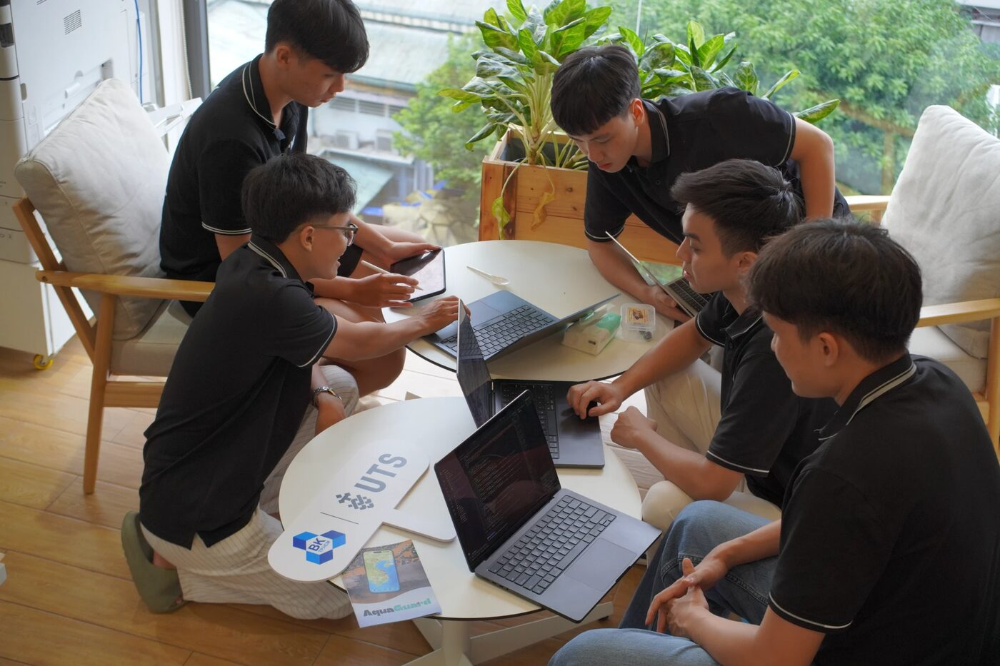
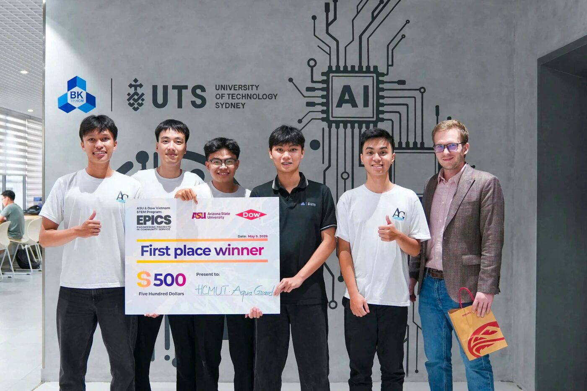

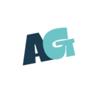
AquaGuard Odylytics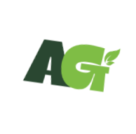
AirGuardBuilt with, backed by and recognised at
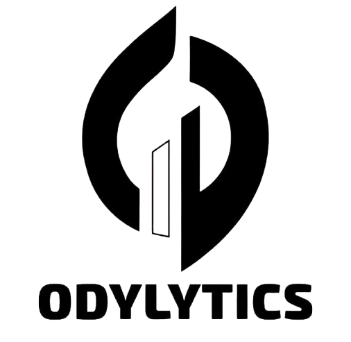
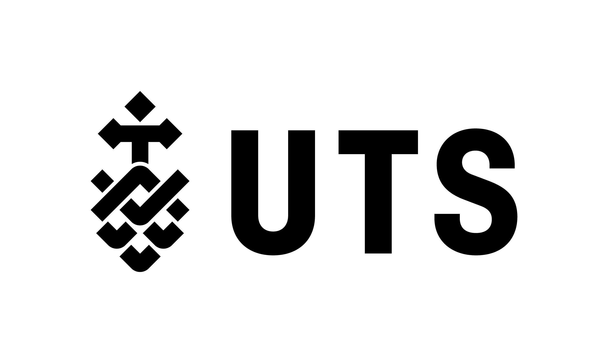
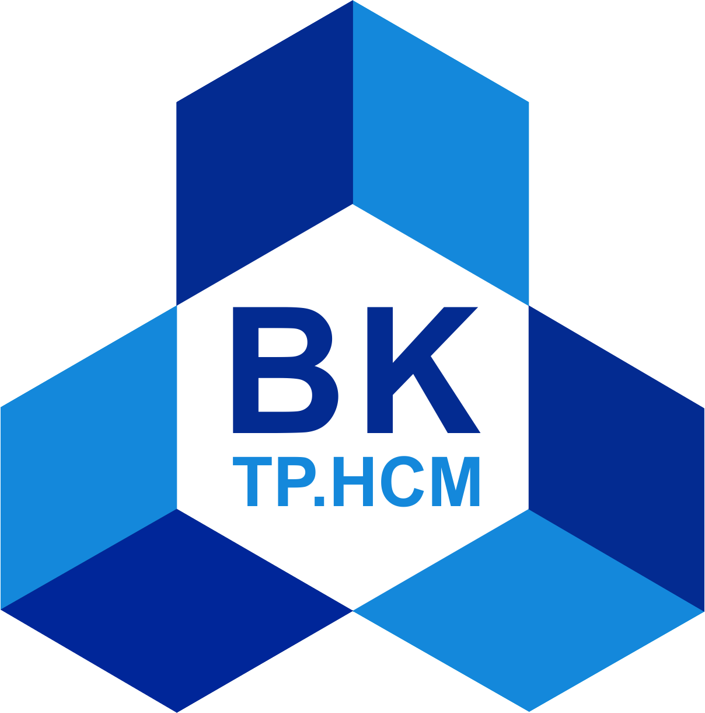
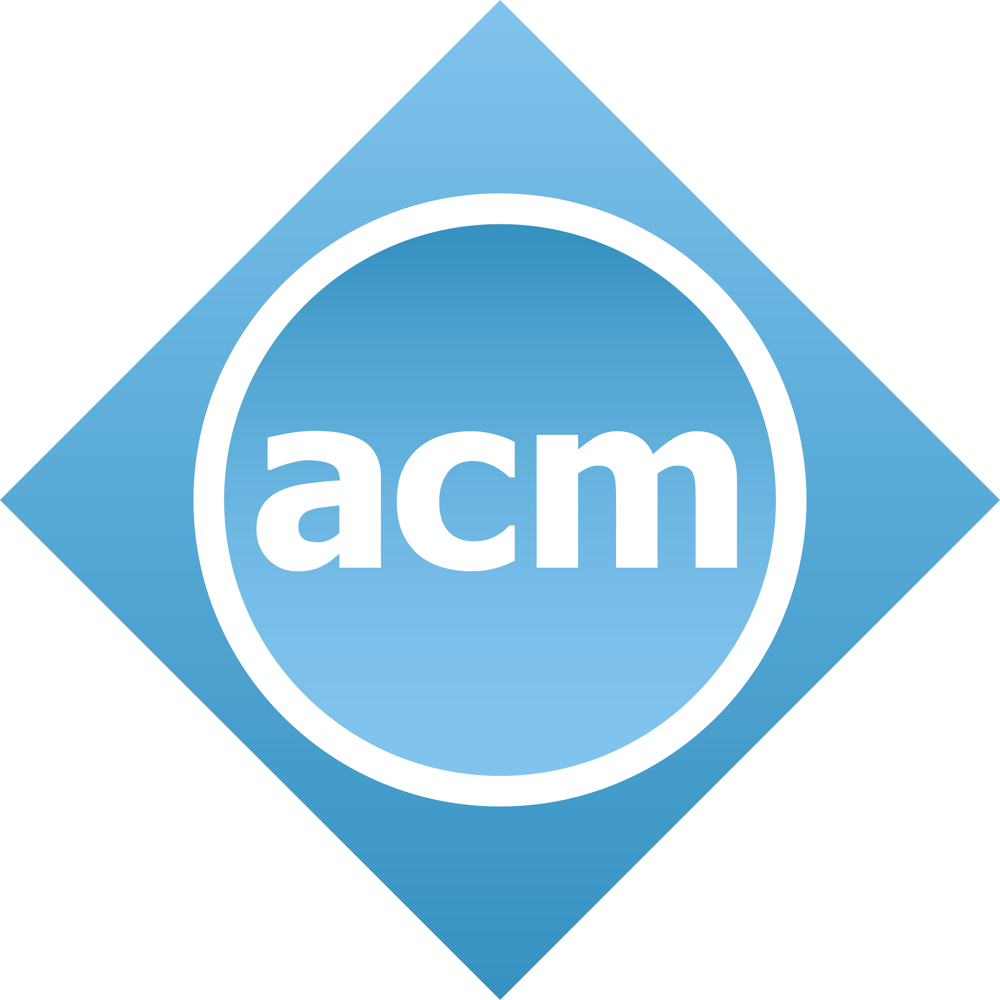
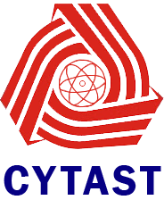
Every product I’ve shipped started in a lab or in the field, with interviews, surveys and a flood map, long before any code. I’m an AI student at UTS, studying in Ho Chi Minh City through HCMUT’s transnational programme, and I spend my weeks in three rooms at once.
Lead a 10+ person team building digital infrastructure for public impact: AquaGuard, AirGuard and Includio. Ran 10+ customer interviews and 300+ surveys to find product-market fit.
Scout and evaluate early-stage startups for the 84X acceleration programme, screening founders and market fit, and rebuild the internal sites behind the deal pipeline.
Co-author two deep-learning papers on skeleton-based early action anticipation and co-develop HCMUT’s Introduction to Computing textbook.
A social technology company building intelligent digital infrastructure that helps communities prepare for, respond to and recover from disasters and environmental challenges. Two platforms, one mission: AquaGuard and AirGuard, plus Includio.
Flood alerts, SOS and evacuation guidance. Citizens report in real time; rescuers and local authorities see the same map.
Air-quality monitoring and carbon tracking. A 4.8 km ride becomes 0.40 kg of CO₂, roughly four cups of milk tea.
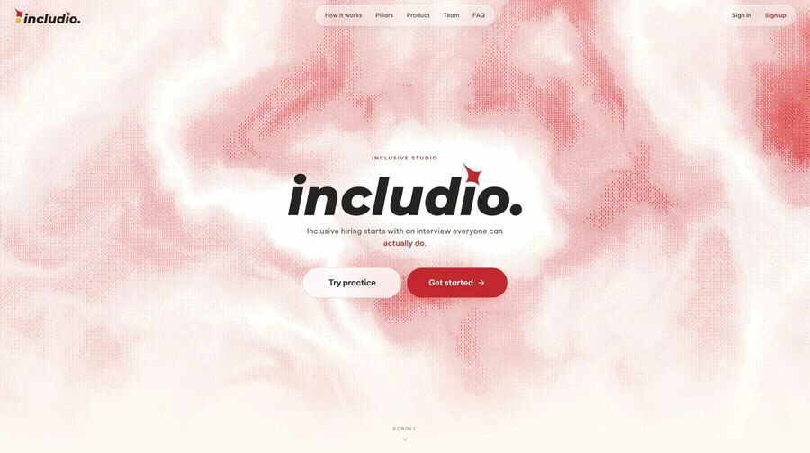
An inclusion-first hiring studio that redesigns the interview itself, so neurodivergent candidates can show what they can actually do.
A hands-free coding platform for learners with upper-limb disabilities, built on facial gestures and block-based lessons.
“Having experienced severe flooding in Huế, I know how difficult it is to find reliable information and timely help. AquaGuard can help people report their location, request assistance, and stay informed.”
“What makes AquaGuard unique is its community-centered approach. Citizens can report incidents, share real-time information, and connect with rescuers, building more resilient communities.”
“A highly valuable and practical solution that can significantly enhance flood rescue and emergency response, with strong potential well beyond Vietnam.”
“By bringing citizens, rescuers, and local authorities together on one platform, AquaGuard could significantly strengthen flood emergency coordination in Vietnam.”
“A practical solution that can support humanitarian relief efforts and help communities respond more effectively during flood emergencies.”
At HCMUT’s URA Research Group I work on explainable models that anticipate an action from the first few frames of 3D skeleton motion, before it finishes.
Leveraging 3D Skeleton Motion for Early Action Anticipation via Spatio-Temporal Causal Modeling.
Nguyen, M., Tran, D. T. T., Nguyen, Q. M., Hac, Q. M., Quan, T. T.
IEEE KSE 2026 · B rank
Transition-Aware History Modeling for Skeleton-Based Early Action Anticipation.
Manhtuan Nguyen, Duong T. T. Tran, Quan M. Nguyen, Quan M. Hac, Xu Wang, Tho T. Quan
DAI 2026 · Q1
Nhập môn điện toán, the 2026 edition of HCMUT’s first-year computing textbook, co-developed with the URA Research Group.
Textbook · 2026 edition
HCMUT
Every paper, review and dataset in one place: 0009-0008-9621-1326.
From international design competitions to the Dean’s List. Tap a card to open the certificate.
National newspapers, TV and school features on the research, the essays and the flood-response work.
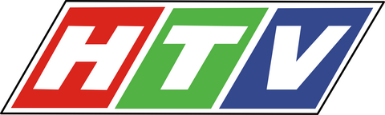
Young Star Garden: education, disaster tech & social impact HTV3 · TV interview A Vietnamese student’s path to a top-20 U.S. university Tài Năng Việt · profile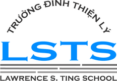
LSTS student accepted to five U.S. universities Lawrence S. Ting School · alumni